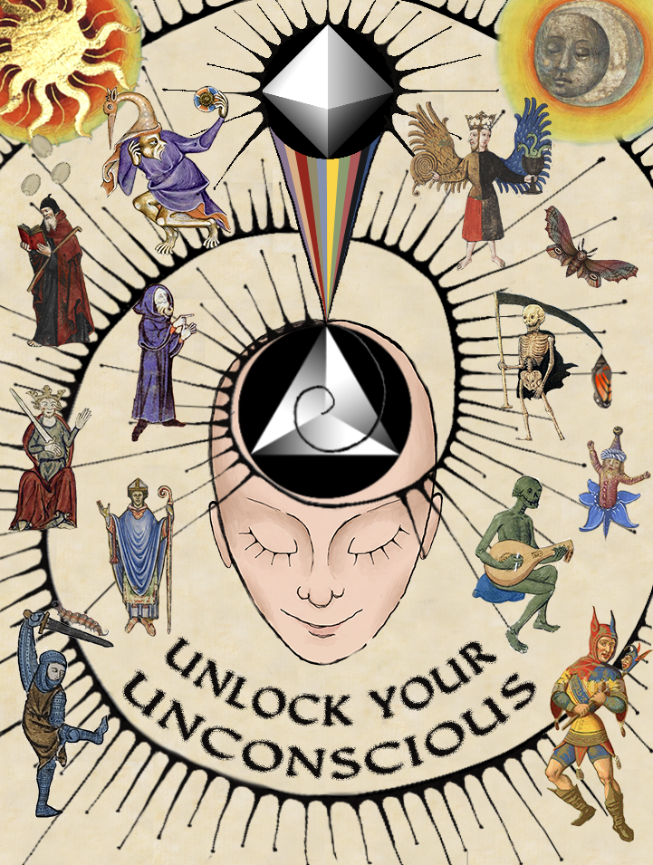

Other
The Wizard, the King, and the Fool
The Wizard, the King, and the Fool is a performance art show inspired by Carl Jung's theories on the archetypes and collective unconscious. You can read more about it here.
Alone Time
Alone Time is a single put out in July 2022. It ponders the personal power and struggle that come with solitude. The visualizer was created using a style transfer.